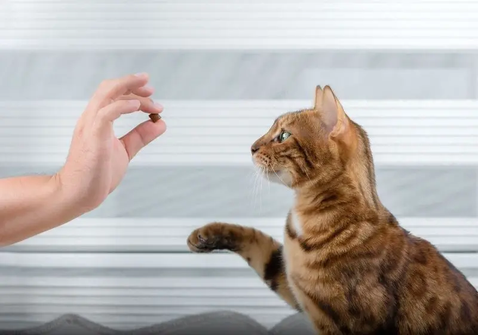
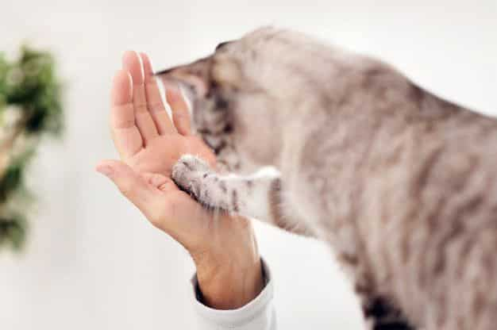

Assinatura Pata Desconto especial em TODAS as suas compras!
Adestramento Pata Gatos

Por o seu amigo precisa?
O adestramento inteligente é uma forma altamente eficaz de educar os gatos de maneira positiva. Além de estimular cognitivamente o animal, o adestramento inclui atividades físicas de treinamento que são divertidas e mantêm o gato ativo. Ele também facilita a socialização do animal, melhora a comunicação entre tutor e gato, promovendo o bem-estar de ambos, e reduz o estresse e a ansiedade do animal de estimação.
Como funciona ?
O serviço tem como objetivo ensinar os gatos a ter disciplina, boas maneiras e retirar condutas indesejadas por meio de treinos regulares. Esses treinos são utilizados por tutores que desejam ensinar "truques" afim de obter gatos mais educados. O adestrador irá até a casa ou local desejado pelo tutor nos dias escolhidos pelo mesmo e realizará aulas de uma hora de duração. Todo o conteúdo ensinado no dia será repassado para o dono com o intuito de que ocorra treinos de fixação na ausência do adestrador. 
Por escolher a Pata ?
Na Petshop Pata, valorizamos seu gato como parte da família. Nossos treinadores experientes usam métodos positivos para criar laços e comportamentos saudáveis. Adaptamos programas às necessidades individuais do seu gato, garantindo resultados duradouros. Além de treinar o gato, também orientamos os tutores para uma relação mais forte e comunicativa. Escolher a Petshop Pata significa investir no bem-estar do seu gato e na harmonia da convivência. Junte-se a nós para uma jornada de aprendizado e conexão.